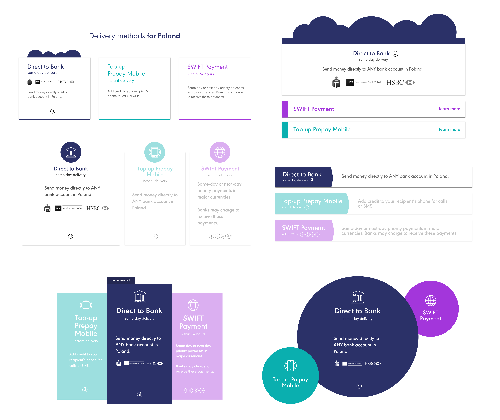

At Azimo, I worked on a variety of tasks ranging from imagining new payment experiences to website redesign.
Azimo was the smallest company I worked for (a startup) so I got to learn and contribute to many parts of the product. Below are a few projects I worked on.
-
iMessage (ui/ux)Specs & Prep
iMessage was one of the most interesting projects I worked on at Azimo because the interactions and mere idea of apps integrated in iMessage are still so novel (at least as of 2016) so I had creatively to explore and imagine.
When I discussed this project with the PM, he stated a few restrictions he had for the design spec 1) the user had to be logged in 2) the user had to have a card set up. There were also specific views such as an error page that he felt was crucial to include as well as paying through determined amounts (just because this was the first iteration and it was easier to build and test, apparently). Besides that, I had freedom to design, as long as the designs still match the branding of the actual app and company of course.
Research & Users GoalsI first did some research by browsing the very few apps that currently supported iMessage such as Airbnb and Venmo. What I noticed from each of their apps was that the end result was merely a link to the app to complete the payment or view an apartment. iMessage currently does not support actual payment and is still very much a conversation platform which means the end goal is just a fancy link.
The users of this would be users already on Azimo who most likely transfer money a lot or would like to easily transfer money when it came up in conversation. Also, owns an Apple device.
The goals of using an app through iMessage, I determined was the 1) ease of completing a simple sharing action to a specific individual and 2) the ability to promote the app to a nonuser as they link will ultimately redirect them to the app (which then they had to download to see or complete the payment). With those goals in mind, I started designing.
Brainstorming the Flow
I sketched out a quick flow chart of possible app interactions for different states of users. I established there were multiple branches that could happen such as logged in user (vs no logged in), user who was logged in and had a card set up (or user who didn’t have card set up). This mock wireframe helped me see what kind of order the screens would be.
Login & Error StatesWhile designing for iMessage, I noted a few differences between designing for a regular phone or mobile device interaction:
Since iMessage apps would usually only show up if you have the companion app downloaded, the assumption was that the user already had an account so I could forgo the whole sign-up flow. The log-in screen above is the first view one one clicks on the Azimo app via iMessage
Another thing was that if something doesn’t work via iMessage, it isn’t the end of the world. The iMessage screen could always redirect the user to the app itself which would work all the time and satisfy the user’s request. Thus, error messages were crucial but they were more of a redirect page rather than an end stop in this case.
Here are two explorations of the error page. The user can either redirect themselves to the app via a button or they can just close iMessage and click on the app to try again. The left screen allows a smoother flow without the user doing all the work. However, the one on the right can be used in cases in which the app is down completely and it is really the end state.
Select Recipient
After the user is verified logged in, the next checkpoint was to see whether the contact the money was being sent to was already in the user’s contact list in the app. If it is, there are small details like the person’s country flag to show what kind of currency the person accepts. If not, there is an option to add to contact.
The middle screen displays how the contact list like how it is designed in the app itself. The PM expressed the need for the user to be able to also send money to someone else (just in case the user changed their mind or want to send money to someone and didn’t want to leave the conversation to do so). I thought this use case might be confusing as you are conversing with a single user and most likely sending to that user so I ended up including it as an option by relatively hidden unless you scroll down.
Select Amount
This project was very much a test run to see how Azimo would fare and if it would even work. Thus, we decided on some predetermined amounts the user can send. In the future, the idea was to have the ability to freeform enter an amount.
Here I was faced the challenge of designing for a small horizontal space, big enough to fit the three options, the card number, and the transfer rate. I could fit everything when it was full screen (an option to expand, kind of like maximizing a window, when using iMessage), but not when it was not. I decided on three squares and also made sure the user knew how much money they were transferring by providing not only the rate but an already calculated label below as well). I ended up not being able to fit the card info in this view, but it appears when an amount is selected.There is a little be of discrepancy between the two views here so further testing is needed to see if the users ever get confused by it.
Since the viewscreen was so small, it was impossible to fit a timeline or any details from the previous step. To make the user wasn't confused where they were and also to make the user knew there was an option to go back and where to go back to, I labeled the backspace button with clear title descriptions.
Card Setup Checkpoint
When the user clicks on an amount, the credit card option comes out. Here is the third and final checkpoint. If the card is already set up, the user can just proceed, otherwise, the button takes you to the app to set it up.
Something to change is to have a clearer ‘next’ button to proceed to the confirmation page. Right now, the credit card button doubles as a next button which is confusing because the color isn't the standard color for buttons and it looks like a call to action to change your card
Send PaymentThe last step is to send the money! Because iMessage only supports links, I created three options of enticing linked image that fit with the company branding. One has a picture of the sender’s face (to verify authenticity of the link), one uses iconography that fits with the brand, and one uses the colors and shapes of the brand. I made sure there were clear exit options (the x on the top right) and it was clear you had to click it (via the arrow on the first and middle option).
Future IterationsIf I had time for future iterations, I would like to cut down on the number of screens. For example, if the user is logged in, the first screen after that would just be to the enter an amount to be sent. Furthermore, the option to do card setup and login within the iMessage app instead of being redirected to open the actual app since it was quite jarring and sometimes confusing to the users to leave iMessage then come back - few came back since you could do the same thing in the app anyway. I asked the engineers if it was possible to do this but it seems like iMessage currently does not support such complex actions. Another thing to explore was to keep the design of the expanded view the same as the minimized view. There are some points of the process in which they are different (just due to space constraints). I don't know whether users will be confused by it so that would require further testing.
Azimo's iMessage app is currently launched! Download the app to try it out.(You have to have your card and account set up though 😉)
-
Invite Friend (ui)Invite Friend - Promo
As of end of October 2016, the screens I have been working on for the recent sprint has been launched in the app store! Azimo has completely rebranded their app and I was tasked with one of the four tabs on the main screen - the Invite Friend page. The screen, despite it's simplicity, is an crucial way for the company to gain more users and thus more customers. The initial design (the one on the left) was the old design that did not work with their new branding anymore. The final design that I worked on is the on the right in which you can now see on the app store, live!

Azimo has this rewards program in which the more people you invite, the more money you will get - but the problem was how to represent this in a way that will convey the message to users quickly and effectively? Through iteration and feedback sessions, I used iconography, copy, and layout that was simple enough for users to understand at a glance and letting the action items (the buttons) be more obvious.
One challenge of this project was to make sure the main text was short enough so when translated into languages with more characters (ie. German), there would be enough space on the screen to do so.
-
Website Redesign (graphic/brand design)Intro to the Problem
On my downtime I also worked with the Branding/Visual Design team on redesigning the website country landing pages. The parts I was specifically tasked with were the delivery methods and testimonials. This is the old design and some things the team wanted to change.
 Delivery MethodsThe Problem
Delivery MethodsThe ProblemThe main problem for the delivery method section of the page is the fact many users did not know they were tabs/buttons they could toggle through. In addition, because they just looked like flat buttons, there were no hierarchy and the information was hard to grasp at a glance. There also wasn’t the opportunity for the company to promote one method over another and it also did not fit with the company branding.
Ideas & SolutionsI used the brand’s shapes and colors to brainstorm what alternative designs could be used for this section. I drew inspiration from how subscription product pages priced their plans (ie. Spotify) and made sure to keep in mind the ability to scale (add more options) if needed.
Something I would change would not to have some methods grayed out because it looked like those were not viable. I imagined it would restore to full opacity on hover but it might be confusing to the user.
TestimonialsThe ProblemThe testimonials were mainly not personable enough despite being quotes from actual people - it didn’t look like it. To rectify it, I got the information from guy’s interview and used his quote an picture for some brainstorming.
 Ideas & Solutions
Ideas & SolutionsThe top left one is the first iteration and then it spiraled from there. Since the image wasn’t super high quality (and there was no guarantee future pictures would be), I wanted to include his face but not put too much emphasis on it. Putting a face and name to each review would greatly increase the authenticity of the review. I also played around again with the companies colors and shapes as well as designed possibilities to scale the feature if needed.
Final Thoughts
Since I wasn’t formally on the brand/marketing team, they had final decision on what elements of mine they ultimately built and launched. This is the current website screenshot I took as of March 2017 (it’s only launched on the Poland country page). Personally, I would fix some of the spacing as well as let users fully expand all of the methods instead of only 2 at a time. However, I do believe the redesign is the right step towards making the site more personable as well as easier to understand and use.
Working with Azimo has taught me to build fast so the product can be tested quickly. I had been used to projects and companies that allowed me the full internship duration/many weeks to work on a single project which meant I could have the time to slowly gather research, do sketches, low fi prototype, all before high fidelity iterations. At Azimo, many times I had to present hi-fi products in a week or less which I meant sometimes I started designing directly via Sketch the first round. Of course I still did research and drew out the basic flow, but most thinking and iteration was done via Sketch. There were downsides of this like changing a specific detail required me to go to every screen and tweak it. But there were also benefits of this I could quickly send the finished files to the engineer to have it launched or showcase it to my team.
This was also the first time where I was in charge of solely the design and not the engineering side. Because of my technical background, many of the projects I've done in the past had me tasked to also do some of the development as well. While this was also fun for me, to be able to focus on solely the design, I had become accustomed to fixing details later in CSS which I couldn't do so here. The downside was that I remember one time I saw my design built, the line thickness and color was all wrong! I quickly got it fixed but it was a lesson to be more specific in your designs and your explanations to another individual.
I'm happy to have the opportunity to work in this kind of environment and to be able to have contributed to many aspects of the product team as well had the opportunity to work in London! Thank you to everyone across the pond.